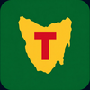

Champion Lakes
Sydney SIRC
Lake Nagambie

Lake BarringtonWyaralong Dam
West Lakes
Lake Burley Griffin
Wind Speed
—
Gusts
—
Storm / Lightning
—
Rain Chance
—
UV Index
—
Heat Risk
—
Current Conditions
Temperature
—°C
Feels like —
Wind Speed
—km/h
—
Wind Gusts
—km/h
—
Humidity
—%
—
Rain (1h)
—mm
—
UV Index
—
Lightning Risk (CAPE)
—
Wind Tracker
Wind speed
Gusts
↑ Arrow = direction wind blows toward
Next 12 Hours
7-Day Outlook
Lightning / CAPE: CAPE >1000 J/kg = clear the water immediately. Use Blitzortung button for live strike maps. |
Tides: Harmonic predictions based on Fremantle gauge constituents (~4 km from Freshwater Bay). SIRC & Champion Lakes are freshwater — tides not applicable. |
Wind: Forecast from Open-Meteo (BOM ACCESS model). Live observations from nearest BOM station (Swanbourne / Perth Airport / Penrith Lakes). |
Data: Open-Meteo (BOM model) · Auto-refreshes every 10 min
Extended outlook (days 8–16). The forecast model extends to 16 days, so this shows real days 8–16 pulled from the same Open-Meteo call. Confidence drops the further out you look — treat the back end as a trend, not a precise forecast. Wind & rain matter most for rowing planning.
Loading extended outlook…
Days 8–16 · —
Max Wind & Gusts (km/h)
Wind
Gust
Temperature Range (°C)
Max
Min
Rainfall (mm) & Chance (%)
Rain mm
Chance %
Planning use: Best for picking regatta & training days a week or two out. Green = rowable wind (<20 km/h max), amber = caution (20–30), red = likely suspension (>30). |
Same Open-Meteo (BOM ACCESS) 16-day call as the live view.